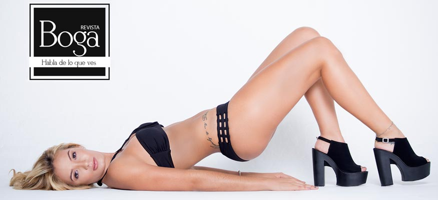

Daniela Rivera
Por: Paola Reyes
Agradecemos a DULCEMENTA por el vestuario
Visítalos en Instagram @dulcementa
Cra 11 No. 82 - 18 Bogotá / Calle 122 No. 18 B - 54
www.dulcementa.com.co
Tel: (1) 5304582
InModels- AGENCIA
Visítalos en Instagram:
@InModelsGroup
 @daniriverag
@daniriverag
Daniriverag
 Daniela Rivera García
Daniela Rivera García
Desde muy pequeña contó con el apoyo de su familia para realizar sus sueños, por ello la inscribieron en academias para aprovechar todo su talento. Sin embargo, fue luego de estudiar como auxiliar de vuelo que se convirtió en toda una modelo profesional, cuando apenas tenía 17 años.
Sus inicios se dieron como modelo de ropa interior, gracias a un amigo fotógrafo que vio en ella el talento, la actitud y la gracia; además de sus voluptuosas curvas y 1.70 centímetros de estatura, cualidades importantes en este mundo tan competido.

{kind=link}
{kind=link}
{kind=link}
{kind=link}
{kind=link}
{kind=link}
{kind=link}
Hace tres años, esta hermosa paisa se convirtió en mamá de una hermosa niña, la cual describe como tierna, amorosa y delicada; ella es su principal motor de vida.
Lo que más le gusta a Daniela de ser modelo es que puede seguir viajando y conocer el mundo.
Y aunque no ha sido fácil dividir su tiempo, aprovecha al máximo los pocos ratos libres para hacer planes juntas y cuidar su cuerpo, en especial su cola, la cual no solo le gusta a ella sino a sus más de 70 mil seguidores, los cuales pone a suspirar con sus sensuales fotos.
Daniela es muy fotogénica, además se considera demasiado alegre, sociable e inteligente, una fusión de cualidades que expresa y disfruta en cada sesión fotográfica, pues a su parecer, el posar para un lente le permite mostrar más quién es ella. Claro está que la música hace parte de su inspiración, por ello, no puede faltarle un playlist de canciones techno.
Entre muchas sesiones que ha hecho, recuerda una en especial, la cual realizó en República Dominicana. Estando allí, lista para posar al lente, una ola se le llevó el vestido de baño. Admite que aunque le costó un poco realizar estas fotografías, le permitieron perder un poco la vergüenza y adquirir más experiencia.
“Si pudiera tener un poder sobrenatural, me gustaría leer la mente”
Y aunque siendo azafata Daniela viajó a muchos lugares del mundo, el ser modelo también le ha permitido no sólo conocer otros países sino personas, por ello, espera ir pronto a Tailandia, pues le parece un lugar mágico, lleno de hermosos paisajes y con un mar espectacular.
Su carrera ha ido en ascenso y en máximo tres años aspira en convertirse en una reconocida top model colombiana. Por ello, si aún no la conoce, visítela en sus redes sociales.